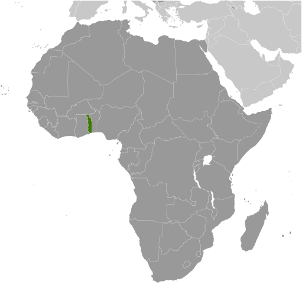
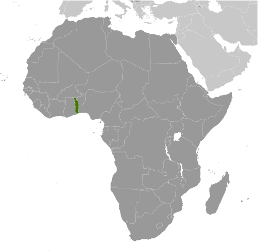

-
Introduction :: Togo
-
Background:French Togoland became Togo in 1960. Gen. Gnassingbe EYADEMA, installed as military ruler in 1967, ruled Togo with a heavy hand for almost four decades. Despite the facade of multi-party elections instituted in the early 1990s, the government was largely dominated by President EYADEMA, whose Rally of the Togolese People (RPT) party has been in power almost continually since 1967 and its successor, the Union for the Republic, maintains a majority of seats in today's legislature. Upon EYADEMA's death in February 2005, the military installed the president's son, Faure GNASSINGBE, and then engineered his formal election two months later. Democratic gains since then allowed Togo to hold its first relatively free and fair legislative elections in October 2007. Since 2007, President GNASSINGBE has started the country along a gradual path to political reconciliation and democratic reform, and Togo has held multiple presidential and legislative elections that were deemed generally free and fair by international observers. Despite those positive moves, political reconciliation has moved slowly and many Togolese complain that important political measures such as presidential term limits and electoral reforms remain undone, leaving the country’s politics in a lethargic state. Internationally, Togo is still known as a country where the same family has been in power for five decades.
-
Geography :: Togo
-
Location:Western Africa, bordering the Bight of Benin, between Benin and GhanaGeographic coordinates:8 00 N, 1 10 EMap references:AfricaArea:total: 56,785 sq kmland: 54,385 sq kmwater: 2,400 sq kmcountry comparison to the world: 127Area - comparative:slightly smaller than West VirginiaLand boundaries:total: 1,880 kmborder countries (3): Benin 651 km, Burkina Faso 131 km, Ghana 1098 kmCoastline:56 kmMaritime claims:territorial sea: 30 nmexclusive economic zone: 200 nmClimate:tropical; hot, humid in south; semiarid in northTerrain:gently rolling savanna in north; central hills; southern plateau; low coastal plain with extensive lagoons and marshesElevation:mean elevation: 236 melevation extremes: 0 m lowest point: Atlantic Ocean986 highest point: Mont AgouNatural resources:phosphates, limestone, marble, arable landLand use:agricultural land: 67.4% (2011 est.)arable land: 45.2% (2011 est.) / permanent crops: 3.8% (2011 est.) / permanent pasture: 18.4% (2011 est.)forest: 4.9% (2011 est.)other: 27.7% (2011 est.)Irrigated land:70 sq km (2012)Population distribution:one of the more densely populated African nations with most of the population residing in rural communities, density is highest in the south on or near the Atlantic coastNatural hazards:hot, dry harmattan wind can reduce visibility in north during winter; periodic droughtsEnvironment - current issues:deforestation attributable to slash-and-burn agriculture and the use of wood for fuel; very little rain forest still present and what remains is highly degraded; desertification; water pollution presents health hazards and hinders the fishing industry; air pollution increasing in urban areasEnvironment - international agreements:party to: Biodiversity, Climate Change, Climate Change-Kyoto Protocol, Desertification, Endangered Species, Hazardous Wastes, Law of the Sea, Ozone Layer Protection, Ship Pollution, Tropical Timber 83, Tropical Timber 94, Wetlands, Whalingsigned, but not ratified: none of the selected agreementsGeography - note:the country's length allows it to stretch through six distinct geographic regions; climate varies from tropical to savanna
-
People and Society :: Togo
-
Population:8,176,449 (July 2018 est.)
note: estimates for this country explicitly take into account the effects of excess mortality due to AIDS; this can result in lower life expectancy, higher infant mortality, higher death rates, lower population growth rates, and changes in the distribution of population by age and sex than would otherwise be expected
country comparison to the world: 100Nationality:noun: Togolese (singular and plural)adjective: TogoleseEthnic groups:African (37 tribes; largest and most important are Ewe, Mina, and Kabre) 99%, European and Syrian-Lebanese less than 1%Languages:French (official, the language of commerce), Ewe and Mina (the two major African languages in the south), Kabye (sometimes spelled Kabiye) and Dagomba (the two major African languages in the north)Religions:Christian 29%, Muslim 20%, indigenous beliefs 51%Demographic profile:Togo’s population is estimated to have grown to four times its size between 1960 and 2010. With nearly 60% of its populace under the age of 25 and a high annual growth rate attributed largely to high fertility, Togo’s population is likely to continue to expand for the foreseeable future. Reducing fertility, boosting job creation, and improving education will be essential to reducing the country’s high poverty rate. In 2008, Togo eliminated primary school enrollment fees, leading to higher enrollment but increased pressure on limited classroom space, teachers, and materials. Togo has a good chance of achieving universal primary education, but educational quality, the underrepresentation of girls, and the low rate of enrollment in secondary and tertiary schools remain concerns.
Togo is both a country of emigration and asylum. In the early 1990s, southern Togo suffered from the economic decline of the phosphate sector and ethnic and political repression at the hands of dictator Gnassingbe EYADEMA and his northern, Kabye-dominated administration. The turmoil led 300,000 to 350,000 predominantly southern Togolese to flee to Benin and Ghana, with most not returning home until relative stability was restored in 1997. In 2005, another outflow of 40,000 Togolese to Benin and Ghana occurred when violence broke out between the opposition and security forces over the disputed election of EYADEMA’s son Faure GNASSINGBE to the presidency. About half of the refugees reluctantly returned home in 2006, many still fearing for their safety. Despite ethnic tensions and periods of political unrest, Togo in September 2017 was home to more than 9,600 refugees from Ghana.
Age structure:0-14 years: 40.13% (male 1,646,438 /female 1,634,609)15-24 years: 19.1% (male 779,774 /female 782,192)25-54 years: 32.96% (male 1,339,150 /female 1,356,020)55-64 years: 4.34% (male 167,575 /female 187,432)65 years and over: 3.46% (male 122,175 /female 161,084) (2018 est.)population pyramid: The World Factbook Field Image ModalAfrica :: Togo Print
The World Factbook Field Image ModalAfrica :: Togo Print Image DescriptionThis is the population pyramid for Togo. A population pyramid illustrates the age and sex structure of a country's population and may provide insights about political and social stability, as well as economic development. The population is distributed along the horizontal axis, with males shown on the left and females on the right. The male and female populations are broken down into 5-year age groups represented as horizontal bars along the vertical axis, with the youngest age groups at the bottom and the oldest at the top. The shape of the population pyramid gradually evolves over time based on fertility, mortality, and international migration trends.
Image DescriptionThis is the population pyramid for Togo. A population pyramid illustrates the age and sex structure of a country's population and may provide insights about political and social stability, as well as economic development. The population is distributed along the horizontal axis, with males shown on the left and females on the right. The male and female populations are broken down into 5-year age groups represented as horizontal bars along the vertical axis, with the youngest age groups at the bottom and the oldest at the top. The shape of the population pyramid gradually evolves over time based on fertility, mortality, and international migration trends.
For additional information, please see the entry for Population pyramid on the Definitions and Notes page under the References tab.Dependency ratios:total dependency ratio: 81.2 (2015 est.)youth dependency ratio: 76.2 (2015 est.)elderly dependency ratio: 5.1 (2015 est.)potential support ratio: 19.8 (2015 est.)Median age:total: 19.9 yearsmale: 19.6 yearsfemale: 20.1 years (2018 est.)country comparison to the world: 196Population growth rate:2.61% (2018 est.)country comparison to the world: 18Birth rate:32.8 births/1,000 population (2018 est.)country comparison to the world: 30Death rate:6.8 deaths/1,000 population (2018 est.)country comparison to the world: 135Net migration rate:0 migrant(s)/1,000 population (2017 est.)country comparison to the world: 99Population distribution:one of the more densely populated African nations with most of the population residing in rural communities, density is highest in the south on or near the Atlantic coastUrbanization:urban population: 41.7% of total population (2018)rate of urbanization: 3.76% annual rate of change (2015-20 est.)Major urban areas - population:1.746 million LOME (capital) (2018)Sex ratio:at birth: 1.02 male(s)/female (2017 est.)0-14 years: 1.01 male(s)/female (2017 est.)15-24 years: 1 male(s)/female (2017 est.)25-54 years: 0.99 male(s)/female (2017 est.)55-64 years: 0.89 male(s)/female (2017 est.)65 years and over: 0.76 male(s)/female (2017 est.)total population: 0.98 male(s)/female (2017 est.)Mother's mean age at first birth:21 years (2013/14 est.)note: median age at first birth among women 25-29
Maternal mortality rate:368 deaths/100,000 live births (2015 est.)country comparison to the world: 32Infant mortality rate:total: 40.8 deaths/1,000 live births (2018 est.)male: 47.1 deaths/1,000 live births (2018 est.)female: 34.4 deaths/1,000 live births (2018 est.)country comparison to the world: 43Life expectancy at birth:total population: 65.8 years (2018 est.)male: 63.1 years (2018 est.)female: 68.6 years (2018 est.)country comparison to the world: 178Total fertility rate:4.32 children born/woman (2018 est.)country comparison to the world: 26Contraceptive prevalence rate:19.9% (2013/14)Health expenditures:5.2% of GDP (2014)country comparison to the world: 135Physicians density:0.06 physicians/1,000 population (2008)Hospital bed density:0.7 beds/1,000 population (2011)Drinking water source:improved: urban: 91.4% of populationrural: 44.2% of populationtotal: 63.1% of populationunimproved: urban: 8.6% of populationrural: 55.8% of populationtotal: 36.9% of population (2015 est.)Sanitation facility access:improved: urban: 24.7% of population (2015 est.)rural: 2.9% of population (2015 est.)total: 11.6% of population (2015 est.)unimproved: urban: 75.3% of population (2015 est.)rural: 97.1% of population (2015 est.)total: 88.4% of population (2015 est.)HIV/AIDS - adult prevalence rate:2.1% (2017 est.)country comparison to the world: 23HIV/AIDS - people living with HIV/AIDS:110,000 (2017 est.)country comparison to the world: 43HIV/AIDS - deaths:4,700 (2017 est.)country comparison to the world: 31Major infectious diseases:degree of risk: very high (2016)food or waterborne diseases: bacterial and protozoal diarrhea, hepatitis A, and typhoid fever (2016)vectorborne diseases: malaria, dengue fever, and yellow fever (2016)water contact diseases: schistosomiasis (2016)animal contact diseases: rabies (2016)respiratory diseases: meningococcal meningitis (2016)Obesity - adult prevalence rate:8.4% (2016)country comparison to the world: 152Children under the age of 5 years underweight:16.2% (2014)country comparison to the world: 38Education expenditures:5.1% of GDP (2016)country comparison to the world: 74Literacy:definition: age 15 and over can read and write (2015 est.)total population: 63.7% (2015 est.)male: 77.3% (2015 est.)female: 51.2% (2015 est.)School life expectancy (primary to tertiary education):total: 12 years (2011)male: NA (2011)female: NA (2011)Unemployment, youth ages 15-24:total: 2.8% (2011 est.)male: 3.4% (2011 est.)female: 2.2% (2011 est.)country comparison to the world: 165 -
Government :: Togo
-
Country name:conventional long form: Togolese Republicconventional short form: Togolocal long form: Republique Togolaiselocal short form: noneformer: French Togolandetymology: derived from the Ewe words "to" (river) and "godo" (on the other side) to give the sense of "on the other side of the river"; originally, this designation applied to the town of Togodo (now Togoville) on the northern shore of Lake Togo, but the name was eventually extended to the entire nationGovernment type:presidential republicCapital:name: Lomegeographic coordinates: 6 07 N, 1 13 Etime difference: UTC 0 (5 hours ahead of Washington, DC, during Standard Time)Administrative divisions:5 regions (regions, singular - region); Centrale, Kara, Maritime, Plateaux, SavanesIndependence:27 April 1960 (from French-administered UN trusteeship)National holiday:Independence Day, 27 April (1960)Constitution:history: several previous; latest adopted 27 September 1992, effective 14 October 1992 (2017)amendments: proposed by the president of the republic or supported by at least one-fifth of the National Assembly membership; passage requires four-fifths majority vote by the Assembly; a referendum is required if approved by only two-thirds majority of the Assembly or if requested by the president; constitutional articles on the republican and secular form of government cannot be amended; amended 2002, 2007; note - a September 2017 Assembly vote on a package of amendments including presidential term limits failed the four-fifths majority vote required for passage but met the two-thirds majority vote required for holding a referendeum (2017)Legal system:customary law systemInternational law organization participation:accepts compulsory ICJ jurisdiction with reservations; non-party state to the ICCtCitizenship:citizenship by birth: nocitizenship by descent only: at least one parent must be a citizen of Togodual citizenship recognized: yesresidency requirement for naturalization: 5 yearsSuffrage:18 years of age; universalJudicial branch:highest courts: Supreme Court or Cour Supreme (organized into criminal and administrative chambers, each with a chamber president and advisors); Constitutional Court (consists of 9 judges, including the court president)judge selection and term of office: Supreme Court president appointed by decree of the president of the republic upon the proposal of the Supreme Council of the Magistracy, a 9-member judicial, advisory, and disciplinary body; other judicial appointments and judge tenure NA; Constitutional Court judges appointed by the National Assembly; judge tenure NAsubordinate courts: Court of Assizes (sessions court); Appeal Court; tribunals of first instance (divided into civil, commercial, and correctional chambers; Court of State Security; military tribunalExecutive branch:chief of state: President Faure GNASSINGBE (since 4 May 2005)head of government: Prime Minister Komi KLASSOU (since 5 June 2015)cabinet: Council of Ministers appointed by the president on the advice of the prime ministerelections/appointments: president directly elected by simple majority popular vote for a 5-year term (no term limits); election last held on 25 April 2015 (next to be held in 2020); prime minister appointed by the presidentelection results: Faure GNASSINGBE reelected president; percent of vote - Faure GNASSINGBE (UNIR) 58.8%, Jean-Pierre FABRE (ANC) 35.2%, Tchaboure GOGUE (ADDI) 4%, other 2%Legislative branch:description: unicameral National Assembly or Assemblee Nationale (91 seats; members directly elected in multi-seat constituencies by closed, party-list proportional representation vote to serve 5-year terms)elections: last held on 25 July 2013 (next originally scheduled in July 2018, rescheduled for 20 December 2018)election results: percent of vote by coalition/party - UNIR 46.7%, CST 28.9%, Rainbow Alliance 10.8%, UFC 7.7%, independent 0.8%, other 5.1%; seats by coalition/party - UNIR 62, CST 19, Rainbow Alliance 6, UFC 3, independent 1Political parties and leaders:Action Committee for Renewal or CAR [Yaovi AGBOYIBO]
Alliance of Democrats for Integral Development or ADDI [Tchaboure GOGUE]
Combat for Political Change in 2015 or CAP 2015 (coalition of 7 parties) [Jean-Pierre FABRE]
Democratic Convention of African Peoples or CDPA [Brigitte ADJAMAGBO-JOHNSON]
Democratic Forces for the Republic or FDR [Dodji APEVON]
National Alliance for Change or ANC [Jean-Pierre FABRE]
New Togolese Commitment [Gerry TAAMA]
Pan-African National Party or PNP [Tikpi ATCHADAM]
Pan-African Patriotic Convergence or CPP [Edem KODJO]
Rainbow Alliance [Brigitte ADJAMAGBO-JOHNSON] (a coalition of 6 parties)
Save Togo Collective (Collectif Sauvons le Togo) or CST [Ata MESAN, Ajavaon ZEUS](alliance established in 2012 includes ADDI, ANC, Organization to Build a United Togo, the Socialist Pact for Renewal, the Movement of Centrist Republicans, Worker's Party)
Socialist Pact for Renewal or PSR [Abi TCHESSA]
The Togolese Party [Nathaniel OLYMPIO]
Union of Forces for Change or UFC [Gilchrist OLYMPIO]
Union for the Republic or UNIR [Faure GNASSINGBE]International organization participation:ACP, AfDB, AU, ECOWAS, EITI (compliant country), Entente, FAO, FZ, G-77, IAEA, IBRD, ICAO, ICRM, IDA, IDB, IFAD, IFC, IFRCS, ILO, IMF, IMO, Interpol, IOC, IOM, IPU, ISO (correspondent), ITSO, ITU, ITUC (NGOs), MIGA, MINURSO, MINUSMA, NAM, OIC, OIF, OPCW, PCA, UN, UNAMID, UNCTAD, UNESCO, UNHCR, UNIDO, UNMIL, UNOCI, UNWTO, UPU, WADB (regional), WAEMU, WCO, WFTU (NGOs), WHO, WIPO, WMO, WTODiplomatic representation in the US:chief of mission: Ambassador Frederic Edem HEGBE (since 24 April 2017)chancery: 2208 Massachusetts Avenue NW, Washington, DC 20008telephone: [1] (202) 234-4212FAX: [1] (202) 232-3190Diplomatic representation from the US:chief of mission: Ambassador David R. GILMOUR (20 December 2015)embassy: 4332 Blvd. Gnassingbe Eyadema, Cite OUA, Lomemailing address: B.P. 852, Lome; 2300 Lome Place, Washington, DC 20521-2300telephone: [228] 2261-5470FAX: [228] 2261-5501Flag description:five equal horizontal bands of green (top and bottom) alternating with yellow; a white five-pointed star on a red square is in the upper hoist-side corner; the five horizontal stripes stand for the five different regions of the country; the red square is meant to express the loyalty and patriotism of the people, green symbolizes hope, fertility, and agriculture, while yellow represents mineral wealth and faith that hard work and strength will bring prosperity; the star symbolizes life, purity, peace, dignity, and Togo's independencenote: uses the popular Pan-African colors of Ethiopia
National symbol(s):lion; national colors: green, yellow, red, whiteNational anthem:name: "Salut a toi, pays de nos aieux" (Hail to Thee, Land of Our Forefathers)lyrics/music: Alex CASIMIR-DOSSEHnote: adopted 1960, restored 1992; this anthem was replaced by another during one-party rule between 1979 and 1992
-
Economy :: Togo
-
Economy - overview:
Togo has enjoyed a period of steady economic growth fueled by political stability and a concerted effort by the government to modernize the country’s commercial infrastructure, but discontent with President Faure GNASSINGBE has led to a rapid rise in protests, creating downside risks. The country completed an ambitious large-scale infrastructure improvement program, including new principal roads, a new airport terminal, and a new seaport. The economy depends heavily on both commercial and subsistence agriculture, providing employment for around 60% of the labor force. Some basic foodstuffs must still be imported. Cocoa, coffee, and cotton and other agricultural products generate about 20% of export earnings with cotton being the most important cash crop. Togo is among the world's largest producers of phosphate and seeks to develop its carbonate phosphate reserves, which provide more than 20% of export earnings.
Supported by the World Bank and the IMF, the government's decade-long effort to implement economic reform measures, encourage foreign investment, and bring revenues in line with expenditures has moved slowly. Togo completed its IMF Extended Credit Facility in 2011 and reached a Heavily Indebted Poor Country debt relief completion point in 2010 at which 95% of the country's debt was forgiven. Togo continues to work with the IMF on structural reforms, and in January 2017, the IMF signed an Extended Credit Facility arrangement consisting of a three-year $238 million loan package. Progress depends on follow through on privatization, increased transparency in government financial operations, progress toward legislative elections, and continued support from foreign donors.
Togo’s 2017 economic growth probably remained steady at 5.0%, largely driven by infusions of foreign aid, infrastructure investment in its port and mineral industry, and improvements in the business climate. Foreign direct investment inflows have slowed in recent years.
GDP (purchasing power parity):$12.97 billion (2017 est.)$12.42 billion (2016 est.)$11.82 billion (2015 est.)note: data are in 2017 dollars
country comparison to the world: 155GDP (official exchange rate):$4.767 billion (2017 est.) (2017 est.)GDP - real growth rate:4.4% (2017 est.)5.1% (2016 est.)5.7% (2015 est.)country comparison to the world: 66GDP - per capita (PPP):$1,700 (2017 est.)$1,600 (2016 est.)$1,600 (2015 est.)note: data are in 2017 dollars
country comparison to the world: 215Gross national saving:16.1% of GDP (2017 est.)21.8% of GDP (2016 est.)21.2% of GDP (2015 est.)country comparison to the world: 129GDP - composition, by end use:household consumption: 84.5% (2017 est.)government consumption: 11.4% (2017 est.)investment in fixed capital: 23.4% (2017 est.)investment in inventories: -1.4% (2017 est.)exports of goods and services: 43.1% (2017 est.)imports of goods and services: -61% (2017 est.)GDP - composition, by sector of origin:agriculture: 28.8% (2017 est.)industry: 21.8% (2017 est.)services: 49.8% (2017 est.)Agriculture - products:coffee, cocoa, cotton, yams, cassava (manioc, tapioca), corn, beans, rice, millet, sorghum; livestock; fishIndustries:phosphate mining, agricultural processing, cement, handicrafts, textiles, beveragesIndustrial production growth rate:5% (2017 est.)country comparison to the world: 58Labor force:2.595 million (2007 est.)country comparison to the world: 114Labor force - by occupation:agriculture: 65%industry: 5%services: 30% (1998 est.)Unemployment rate:6.9% (2016 est.)country comparison to the world: 105Population below poverty line:55.1% (2015 est.)Distribution of family income - Gini index:46 (2011)country comparison to the world: 35Budget:revenues: 1.023 billion (2017 est.)expenditures: 1.203 billion (2017 est.)Taxes and other revenues:21.5% (of GDP) (2017 est.)country comparison to the world: 137Budget surplus (+) or deficit (-):-3.8% (of GDP) (2017 est.)country comparison to the world: 154Public debt:75.7% of GDP (2017 est.)81.6% of GDP (2016 est.)country comparison to the world: 40Fiscal year:calendar yearInflation rate (consumer prices):-0.7% (2017 est.)0.9% (2016 est.)country comparison to the world: 4Central bank discount rate:2.5% (31 December 2010)4.25% (31 December 2009)country comparison to the world: 116Commercial bank prime lending rate:5.3% (31 December 2016 est.)8.29% (31 December 2015 est.)country comparison to the world: 142Stock of narrow money:$1.335 billion (31 December 2017 est.)$1.119 billion (31 December 2016 est.)country comparison to the world: 146Stock of broad money:$1.335 billion (31 December 2017 est.)$1.119 billion (31 December 2016 est.)country comparison to the world: 154Stock of domestic credit:$1.95 billion (31 December 2017 est.)$1.624 billion (31 December 2016 est.)country comparison to the world: 152Current account balance:-$383 million (2017 est.)-$416 million (2016 est.)country comparison to the world: 111Exports:$1.046 billion (2017 est.)$967.4 million (2016 est.)country comparison to the world: 159Exports - partners:Benin 16.7%, Burkina Faso 15.2%, Niger 8.9%, India 7.3%, Mali 6.7%, Ghana 5.5%, Cote dIvoire 5.4%, Nigeria 4.1% (2017)Exports - commodities:reexports, cotton, phosphates, coffee, cocoaImports:$1.999 billion (2017 est.)$2 billion (2016 est.)country comparison to the world: 166Imports - commodities:machinery and equipment, foodstuffs, petroleum productsImports - partners:China 27.5%, France 9.1%, Netherlands 4.4%, Japan 4.3% (2017)Reserves of foreign exchange and gold:$77.8 million (31 December 2017 est.)$42.6 million (31 December 2016 est.)country comparison to the world: 182Debt - external:$1.442 billion (31 December 2017 est.)$1.22 billion (31 December 2016 est.)country comparison to the world: 161Stock of direct foreign investment - at home:(31 December 2009 est.)Exchange rates:Communaute Financiere Africaine francs (XOF) per US dollar -617.4 (2017 est.)593.01 (2016 est.)593.01 (2015 est.)591.45 (2014 est.)494.42 (2013 est.) -
Energy :: Togo
-
Electricity access:population without electricity: 5 million (2013)electrification - total population: 27% (2013)electrification - urban areas: 35% (2013)electrification - rural areas: 21% (2013)Electricity - production:232.6 million kWh (2016 est.)country comparison to the world: 189Electricity - consumption:1.261 billion kWh (2016 est.)country comparison to the world: 151Electricity - exports:0 kWh (2016 est.)country comparison to the world: 208Electricity - imports:1.14 billion kWh (2016 est.)country comparison to the world: 67Electricity - installed generating capacity:230,000 kW (2016 est.)country comparison to the world: 164Electricity - from fossil fuels:70% of total installed capacity (2016 est.)country comparison to the world: 110Electricity - from nuclear fuels:0% of total installed capacity (2017 est.)country comparison to the world: 195Electricity - from hydroelectric plants:29% of total installed capacity (2017 est.)country comparison to the world: 71Electricity - from other renewable sources:1% of total installed capacity (2017 est.)country comparison to the world: 169Crude oil - production:0 bbl/day (2017 est.)country comparison to the world: 206Crude oil - exports:0 bbl/day (2015 est.)country comparison to the world: 206Crude oil - imports:0 bbl/day (2015 est.)country comparison to the world: 204Crude oil - proved reserves:0 bbl (1 January 2018 est.)country comparison to the world: 204Refined petroleum products - production:0 bbl/day (2015 est.)country comparison to the world: 208Refined petroleum products - consumption:15,000 bbl/day (2016 est.)country comparison to the world: 152Refined petroleum products - exports:0 bbl/day (2015 est.)country comparison to the world: 209Refined petroleum products - imports:13,100 bbl/day (2015 est.)country comparison to the world: 142Natural gas - production:0 cu m (2017 est.)country comparison to the world: 206Natural gas - consumption:0 cu m (2017 est.)country comparison to the world: 206Natural gas - exports:0 cu m (2017 est.)country comparison to the world: 200Natural gas - imports:0 cu m (2017 est.)country comparison to the world: 200Natural gas - proved reserves:0 cu m (1 January 2014 est.)country comparison to the world: 200Carbon dioxide emissions from consumption of energy:2.651 million Mt (2017 est.)country comparison to the world: 151
-
Communications :: Togo
-
Telephones - fixed lines:total subscriptions: 36,111 (2017 est.)subscriptions per 100 inhabitants: less than 1 (2017 est.)country comparison to the world: 165Telephones - mobile cellular:total subscriptions: 6,219,981 (2017 est.)subscriptions per 100 inhabitants: 78 (2017 est.)country comparison to the world: 113Telephone system:general assessment: fair system based on a network of microwave radio relay routes supplemented by open-wire lines and a mobile-cellular system (2016)domestic: microwave radio relay and open-wire lines for conventional system; combined fixed-line and mobile-cellular teledensity roughly 70 telephones per 100 persons with mobile-cellular use predominating (2016)international: country code - 228; satellite earth stations - 1 Intelsat (Atlantic Ocean), 1 Symphonie (2016)Broadcast media:1 state-owned TV station with multiple transmission sites; 5 private TV stations broadcast locally; cable TV service is available; state-owned radio network with 2 stations (in Lome and Kara); several dozen private radio stations and a few community radio stations; transmissions of multiple international broadcasters available (2018)Internet country code:.tgInternet users:total: 877,310 (July 2016 est.)percent of population: 11.3% (July 2016 est.)country comparison to the world: 135Broadband - fixed subscriptions:total: 45,756 (2017 est.)subscriptions per 100 inhabitants: 1 (2017 est.)country comparison to the world: 131
-
Transportation :: Togo
-
National air transport system:number of registered air carriers: 1 (2015)inventory of registered aircraft operated by air carriers: 8 (2015)annual passenger traffic on registered air carriers: 769,904 (2015)annual freight traffic on registered air carriers: 0 mt-km (2015)Civil aircraft registration country code prefix:5V (2016)Airports:8 (2013)country comparison to the world: 163Airports - with paved runways:total: 2 (2013)2,438 to 3,047 m: 2 (2013)Airports - with unpaved runways:total: 6 (2013)914 to 1,523 m: 4 (2013)under 914 m: 2 (2013)Pipelines:62 km gasRailways:total: 568 km (2014)narrow gauge: 568 km 1.000-m gauge (2014)country comparison to the world: 111Roadways:total: 11,652 km (2007)paved: 2,447 km (2007)unpaved: 9,205 km (2007)country comparison to the world: 132Waterways:50 km (seasonally navigable by small craft on the Mono River depending on rainfall) (2011)country comparison to the world: 102Merchant marine:total: 308 (2017)by type: bulk carrier 11, container ship 3, general cargo 199, oil tanker 44, other 51 (2017)country comparison to the world: 51Ports and terminals:major seaport(s): Kpeme, Lome
-
Military and Security :: Togo
-
Military expenditures:1.86% of GDP (2016)1.71% of GDP (2015)1.85% of GDP (2014)1.77% of GDP (2013)1.63% of GDP (2012)country comparison to the world: 55Military branches:Togolese Armed Forces (Forces Armees Togolaise, FAT): Togolese Army (l'Armee de Terre), Togolese Navy (Forces Naval Togolaises), Togolese Air Force (Armee de l’Air), National Gendarmerie (2018)Military service age and obligation:18 years of age for military service; 2-year service obligation; currently the military is only an all-volunteer force (2017)
-
Transnational Issues :: Togo
-
Disputes - international:in 2001, Benin claimed Togo moved boundary monuments - joint commission continues to resurvey the boundarytalks continue between Benin and Togo on funding the Adjrala hydroelectric dam on the Mona RiverRefugees and internally displaced persons:refugees (country of origin): 9,727 (Ghana) (2018)Illicit drugs:transit hub for Nigerian heroin and cocaine traffickers; money laundering not a significant problem
Africa ::
Togo